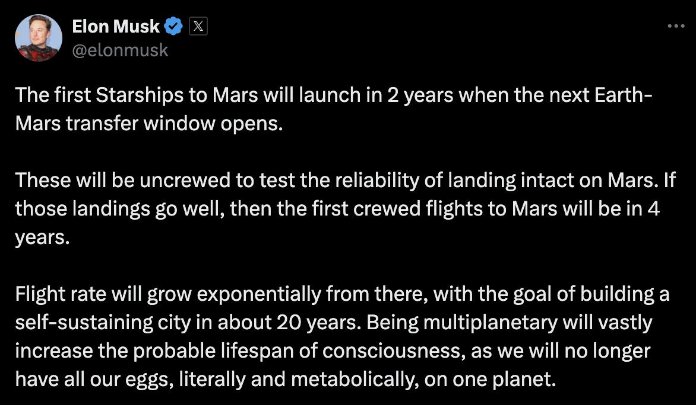

In humanity's hindsight, the development of SpaceX’s Starship could become more important than the creation of the first Ford vehicle, the first flight of the Wright brothers’ plane, and the advent of the steam engine combined.
Elon Musk, the CEO of SpaceX, recently tweeted - or Xed:
Starship is the lifeboat on humanity's sinking ship, and throughout its development, Elon Musk has been the center of countless negative remarks. The antagonists making these comments, while maybe justified, tend to lose sight of the technological benefits Elon has created - and will continue to create - for humanity. Instead, they attempt to silence him and undermine his intellect. In order for Elon to continue to produce companies that drastically benefit humanity, it is imperative that these oppositionists let go of attacking his shortcomings and recognize his impact on our species’ long term wellbeing.
While technically brilliant, Elon has been riddled with controversies over the course of the past few years. He has had allegations of harassment with former interns, flight attendants, other employees at SpaceX, and has faced repercussions from the SEC for irresponsible tweets he posted. Additionally, Elon has lost many fans on the democratic side of the spectrum for developing a friendship and endorsing former president Donald Trump.
The results of these actions have been widespread slandering of his character by critics saying “There are idiots and then there is Elon Musk,” “He’s spent most of the past year behaving like a preschooler on a finger-load of frosting,” along with countless articles attacking his intellect and identity. It has been reported that Elon Musk gets “four times more negative coverage than 49 other leading CEOs – combined.”
This has been a large detriment to the success of his companies. There are many climate activists I know who refuse to purchase a Tesla because they do not like Elon, and while I don’t think that Elon should serve as a role model to others in every regard, dismissing his successes and undermining his products is a short sighted mindset.
So for all those who forget what Elon has done for humanity, here's a quick reminder: Elon revolutionized the car industry with the creation of Tesla - the company that has made electric vehicles a realistic option in the automotive sector. Just in 2023, Tesla saved its customers from releasing 20 Million Metric Tons of carbon dioxide into the atmosphere that would have otherwise been produced with internal combustion vehicles. They have also made huge strides in self-driving car technology development, made significant advancements in manufacturing technology that has widespread applications beyond the automotive manufacturing industry, and has brought EVs to the masses while scoring 5 stars in NHTSA safety ratings. If you want to drive the safest car that is doing the best for the planet, the best option is a Tesla - and you should thank Elon for it.
Elon also revolutionized the E-commerce industry when creating PayPal in 1999, allowing money to be sent easily around the globe. So if you've ever used Venmo, PayPal, or Zelle, you can thank Elon Musk.
The most exciting venture of them all is SpaceX. Elon has completely transformed the space industry by creating the company that is trying to give humanity the insurance we require to live for more than a few thousand years.
For the past decade, SpaceX has performed government and commercial launches, oftentimes launching supplies / crew to the ISS and launching Starlink. Starlink is an innovative satellite which provides WiFi connection to any location in the world. This technology has allowed for internet aid for Ukraine during their war with Russia, provided internet to many remote villages in Africa, and also significantly affects other industries like increasing WiFi bandwidth on flights so you can watch your Netflix at higher quality (you know who to thank for your 4K movies at 30,000 feet). These benefits to humanity that Elon has created through SpaceX are great, but the long term goal is way more ambitious.
SpaceX’s end goal mission is to make humanity multiplanetary. In order to survive thousands of years, it is imperative that humanity relocates part of the species to a planet where if a disaster occurs on Earth from widespread disease to nuclear fallout, humanity can survive on another planet. Elon Musk has pioneered a new vision at SpaceX, where rockets are now fully, rapidly reusable, decreasing the cost for launch from multi billion dollar figures to the fifty million dollars range. This makes the possibility of transporting hundreds of thousands of tons of cargo to a different planet somewhat realistic for the first time in the history of the species.
Using this capital generated from the success of the contracts and Starlink, SpaceX has turned their eyes to their next rocket: Starship. Starship is the rocket that will eventually send cargo and humans to Mars, it is large, powerful, and incredibly complex. This is why Starship is the lifeboat on humanity's sinking ship. As with constant war and the ever looming doom of nuclear destruction, the concept of having humans on a different planet as a backup becomes more and more intriguing. In the extreme situation where there is a disaster on Earth, Elon would have been the driving human who saved all of humanity.
All of these wonderful, tangible improvements to the lives of humans are all attributed to one person: Elon Musk. He has been the direct catalyst for a vast number of technological advancements that have directly improved the lives of millions of people, and could one day be billions. Now if cynics want to say that he is irresponsible and immature, sure go ahead and do that, but if you want a sustainable planet, rapid technological innovation, and a human species that will last more than a few more centuries, it's time to start appreciating Elon Musk, and stop antagonizing the man who is responsible for creating the companies attempting to save humanity.